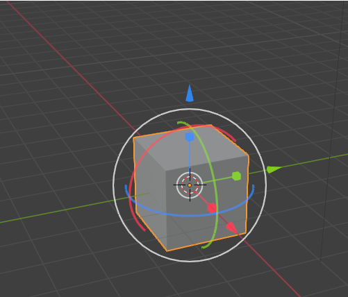

~1 The Tools Panel~
1/6/2025
Showing and Hiding the Tools Menu
To get cursor back to original position.
If you do not see the Gizmo on your Object
Blender is so huge that the best way to approach it is in baby steps. That is what I intend to be doing for you here.
We will begin by taking a look at the Tool panel, which is on the left-hand side of the Viewport.
We want to start out in Object mode. Which is the default mode when you start up Blender. But just in case you have been searching around a bit, before getting to this tutorial, make sure you go back to Object mode. Hit the little arrow at the right of this textbox to find it in the dropdown.
The Tool Panel
The Tool panel inside of Object mode, contains 10 buttons, which represents 10 different tools in which you can access.
Showing and Hiding the Tools Menu
Sometimes, you might want to hide the tool menu to provide more viewing space for your objects on the screen. This is very easy to do. Just click on the letter T on the keyboard for Tools and that menu will disappear. Click on the letter T again, and it will bring your tools back.
Selecting the Object
Of course, in order to be able to do anything with any object it Blender, you must first make sure that you have it selected. You will know it is selected when it has an orange line around it, and you get to see that orange line by simply clicking on the object in the Scene, or in the Scene Collection, which you will find in a panel off to the right of the view port.
The Select Tool
The first tool is the Select tool. If you look in the bottom right-hand corner, you will see a tiny little arrow. This arrow means that if you click on it, you will have access to more options for this tool.
As you can see from the drop down that we can do all types of selection of the object. We can Tweak, Select Box, Select Circle or use a Lasso to select the object. It also gives you the hot keys on the keyboard that you can use instead to make these selections faster.
The Cursor Tool
This tool does not have a little arrow associated with it, so there are no other options available for it. What we can do with this tool is to select and move the cursor.
This is what the cursor looks like on the screen.
Warning, now remember, as long as you have this Cursor tool selected, you will be moving around the cursor. In order to stop moving around the cursor, you must click on another tool.
But, while you do have it selected, you can click anywhere in the viewport, and your cursor will go there. You can also just move it around with your mouse.
Ok, but how if you moved that cursor by mistake, how do you get the cursor back to the original position?
To get cursor back to original position.
You have a hidden panel on the right side of the viewport. This panel can be accessed by clicking on this tiny little arrow. You can also click on the letter N on the keyboard to toggle open and closed this little panel.
Once you are there, you want to click on the View menu tab to find the settings for the cursor.
Notice above, in the Location section that the settings for X, Y and Z are not set to 0. Setting these numbers back to 0 would put the cursor back to the original position. Like this:
The Move Tool
The Next Tool down is the Move Tool. You will notice that if you click on the move tool, that you will have a gizmo pop up on the object. You can use this gizmo to move the object around by clicking on the little arrows. Of course if you went through the previous tutorial that I put up for you entitled: 3 Moving Around the Viewport, you will find that there are many ways in which you can use to move the object other than using the Move tool from the tool box.
When you click on the object with the move tool, that is when you will see the Gizmo pop up. And you can use the Gizmo and its little colored arrows to move the object around.
If you do not see the Gizmo on your Object
If you do not see the little colored gizmo on the object, more than likely you have turned it off, and if you want to see it, you will need to turn it back on again.
If you have your Active Tools checkbox unchecked here. Just check the box, and you will see the Gizmo back on your object again.
The Rotate Tool
The next tool in the toolbox is the rotate tool. Instead of moving the object around with this tool, you can rotate the object to view it from many angles.
This is what the rotate tool looks like on the object. Now remember, the same thing holds true for any one of the Gizmo tools. If you do not see it on the viewport, go to that top Show Gizmos menu and turn back on Active Tools again for the Gizmos.
That white circle that is surrounding the box can be used to free rotate the box in any of the 3 directions. If you use a colored circle, you will restrict the rotation of the box to be contained within that axis of rotation.
The Scale Tool
The Scale Tool, can be used to resize the Object. Again the white circle on this tool can be used to free scale the object in any direction, while the colored lines with boxes at the end of them is used to restrict the scale in just those positions.
Tug on those little Boxy lines to scale in any direction to resize the object.
You will see that the Scale tool, does have a little arrow associated with it in the bottom right-hand corner. This second option for this tool is the Scale Cage. And it looks and works just a bit differently than the regular Scale tool.
It kind of reminds me of being in Edit mode, but you are not. If you try tugging on any one of those dots, or what Blender calls vertices, you will see that your object will grow in the direction that you pull. Or shrink in the direction that you push.
The Cage Scale tool showed up in Version 2.8 of the Blender series in the year 2019, and was not here from the start.
The Transform Tool
This tool could also be thought of as the major mess of all tools. Or everything, all at once. You can do it all with this tool when it comes to moving the object around. It even has the Grab feature, with the shortcut key of G, associated with it.
Yes, the Gizmo of all Gizmos, all together, right in this same little tool.
Move, Scale and Rotate.

Annotate Tool
You can click on the tool in the tool, panel, but before the option for color of it will show up above the viewport, you must also either click in the viewport itself or on the object.

Click in the viewport or on the object for the color swath to show up
Now you can get the full specs on this tool by going to the Blender Manual,
But for a fast overview of this tool, I can tell you that it can be used to add notes to 3D Objects.
It has a little arrow, so it does have a few extra options that comes along with this tool.
Annotation Tools
The annotation tool can be activated in the Toolbar and has the following sub-tools:
Annotate
Draw free-hand strokes in the main area.
Annotate Line
Click and drag to create a line. Optionally, you can select the arrow style for the start and end of the line.
Annotate Polygon
Click multiple times to create multiple connected lines, then press Return or Esc to confirm.
Annotate Eraser
Click and drag to remove lines. The eraser has a Radius setting found in Tool Settings.
Change the tool color to Orange, click right here to open the color wheel and choose a color.
Ok, not exactly the cleanest way of writing a note, but you get the idea.
The Measurement Tool
This tool actually comes with its own instructions once you hover over it.
It is just basically clicking on the object and drawing out a line to measure it.

Add Cube Tool
When you click on this tool, you will see a weird, white, grid-like pattern on the floor.
When you see this shadowed pattern, you want to click on the viewport.
Hold down the left mouse button, and draw out the bottom side of the box.
Now release the left mouse button and move the mouse upward to draw out the height of the box.
Now click the Left mouse button to accept the height of the box.
This Add Cube button on the Tool panel comes with a little arrow in the right-hand bottom corner. So, it has other Options. Here, you are able to select more objects, and you are not just restricted to adding a cube.
Just follow the same directions for adding the other objects. Just remember, for the height, you must let go of the left mouse button before it will allow you to do this action, then just click when you get the height the way you want it.
Box Carve Tool
If you use this tool straight out of the box, it is destructive. Which means it will cut a hole in your object. If you do not want a hole in your object, then this is probably not the tool for you.

There is a slightly less destructive way of doing things if you want to use a modifier instead. But modifiers, at this point is a bit beyond this beginner point, at which we are sitting at now. So, instead just think of this as a destructive hole cutting tool.
So, let’s cut a hole. Click on the tool and then draw out a box on your object. When you let go of the left mouse button, you will find that you have cut a hole in your object.
You will see that the hole goes all the way through to the other side.
Hold down Ctrl-Z to get the object back to the way it was. You may have to hit Ctrl-Z a few times, depending on if you clicked off the object or not, or did some other things in your fright of seeing your object in such a shambles.
See, all better.
This Tool button, also comes with a few more options, and you can press on that little arrow in the bottom right corner to see them.
The Circle is just like the Box Carve tool, but the Poly carve tool is a bit different. You must keep clicking the mouse to create the perimeter for the cut. Then instead of using the mouse button to accept, you must use the Enter key on your keyboard.
Well, that is just about it for the Tools Menu